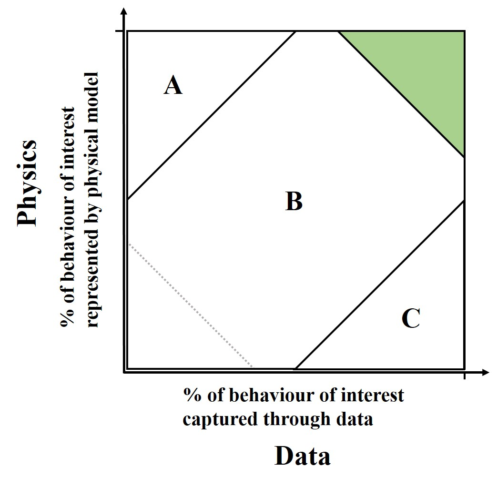
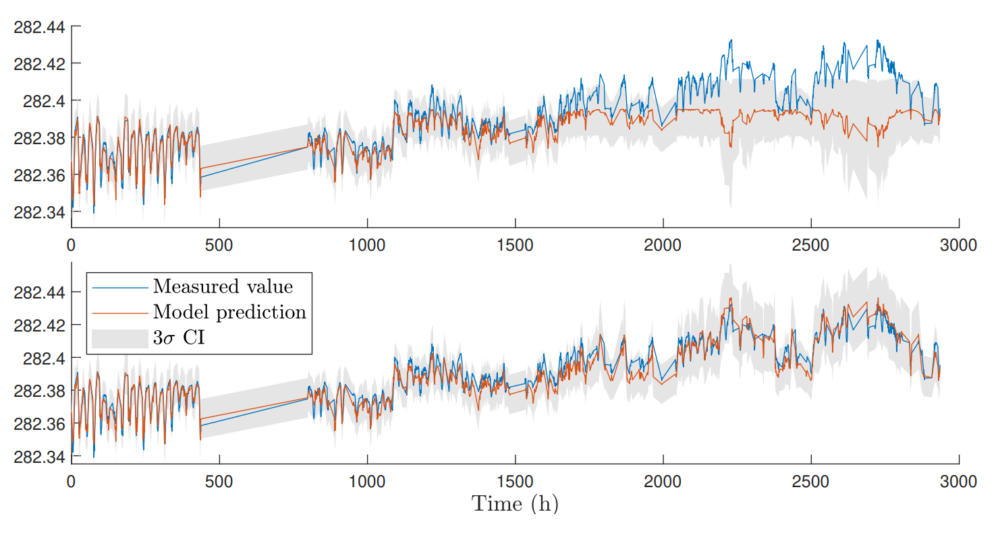
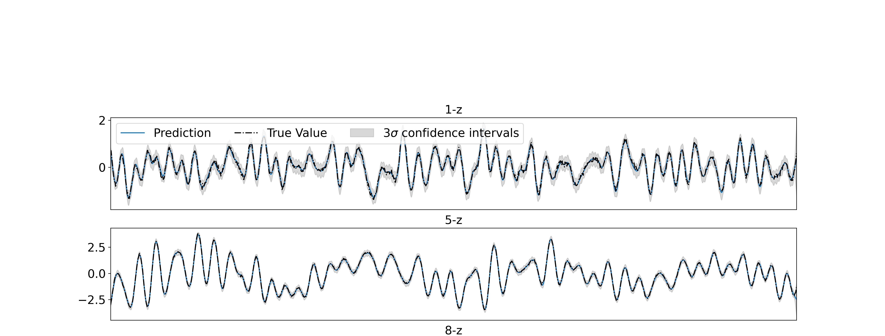

This blog introduces a peer-reviewed position paper in the open-access DCE journal. Prof. Elizabeth Cross and Dr. Matthew Jones from the University of Sheffield discuss Gaussian process regression for physics-informed machine learning.
Over the course of the last several years, the increasing interest that we are seeing in data-centric engineering has largely stemmed from a growing capacity to acquire data from the physical world around us. Advances in sensing and storage hardware now make it possible for us to collect vast amounts of data in fairly short time periods, allowing us to make use of artificial intelligence (AI), and particularly machine learning (ML), to analyse and predict behaviours of engineering systems.
Despite these advances, there are many cases where AI isn’t ready to be a good engineer right now. Whilst it is true that machine learning has seen us make some remarkable gains, we have very quickly arrived at a new set of problems that we as engineers need to overcome to be able to use the technology well.
In this article we focus on two significant and interlinked barriers to using ML to its full potential in an engineering context - a lack of data about all behaviours of interest from our critical structures and systems (even if what we do have is “big”), and the inability to use the data we have to make predictions about unmeasured conditions (extrapolation). Add to these challenges the fact that data from the real world are often noisy, corrupted, not direct observations of the behaviours we actually care about, and often contain missing values, you soon start to get the idea that there are many pieces of the puzzle still missing when attempting to characterise our physical world through monitoring data. We think that part of the solution to these problems is to try and build what we know already - some knowledge of physics - into machine learning algorithms, and later we will show how this can help through some examples from structural dynamics.
Is it a case of physics vs data?
You may now be asking yourself, if there are all these limitations with data-driven approaches, why are they interesting to us? Particularly given the wealth of knowledge we have built up as engineers over the last several thousand years. The blunt answer here is that we don’t know everything, and even when we do know enough, modelling multi-physics and multi-scale processes within a changing environment is often very difficult and energy consuming (and have you validated it?). Finally, hopefully you agree that, if possible, we’d like any predictions we make about important systems/structures/infrastructure to take into account evidence of what is happening currently, and for that, observation is needed (data!).
Given a particular context, there are benefits and disadvantages in taking either a physics or data-based approach; a physics one can provide interpretability, (sometimes) a model with few parameters, and the ability to extrapolate, for example, whereas data-driven approaches can be considered more flexible, may require less user input, and, as we said above, take into account evidence from latest measurements.
The selected route may come down to personal choice but hopefully is the result of a reasoned argument. One hypothetical approach to this reasoning may be to consider how much of the process of interest can be described by known/modelled physics versus how much of it can be characterised by available data - we can characterise this with the knowledge vs data axes in the figure below. Broadly speaking, in region A one would likely take a physics-based approach and in region C a data-driven one. In the happy green area either may be applicable, and in the bottom left hand corner, one may wish to consider the best route to gain additional knowledge, whether through measurement or otherwise.

Recently interest has been growing in methods that attempt to exploit physics-based models and evidence from data together, hopefully retaining the helpful attributes from both approaches. These methods should be useful for the many engineering problems that fall in region B - the “grey” area. In our work, we consider how to utilise a range of physically-infused1 models that range across the physics-data spectrum using Gaussian process (GP) regression, a tool for constructing probabilistic machine learning models. We like the GP framework here because of the many routes to building physics into them - our work shows a whole spectrum of them, allowing us to tailor our model according to the level of data and physics that are available (you will have to read the paper if you want to see more than two examples of this though, sorry).
What problems are we thinking about?
One area where the challenges we were talking about before appear frequently is in the problem of automatically assessing the health of structures from data collection and optimising how we maintain and manage them. Here, we would like to be able to collect and use data to tell us something about the condition of a structure (or multiple ones), as well as how the structure(s) will perform in the future. As a monitoring system comes online, although the data available may be large in size, the information content in it will be limited by the operational conditions seen in the monitoring window (hot, cold, windy, heavily loaded with traffic, etc.), the current condition of the structure and the robustness of the sensing and acquisition system. A data-driven/black-box model established in this setting bears the same limitations and so we need to be careful (and are) about how we expect any such model to generalise to future structural and operational conditions.
Less blathering more examples
The first example we are going to show here is where we are fairly confident that we know the average (mean) behaviour of the system - we know an equation from physical insight that draws a line through the middle of our data. This is the simplest thing to incorporate into a Gaussian process regression - you can just minus the prediction of the physics model from the measured data and use the GP to model the rest (although there are nicer ways to do it) - we call this including a mean function.
For our problem here, we are interested in predicting the deck displacement of a stay-cabled bridge, which can then be used as a performance indicator for the structure. The deck displacement is a function of a number of factors, principally traffic loading and temperature. Here a good candidate for our physics component is the (linear) model for how the stay cables expand and contract with temperature.
The figure here shows two standard GP regressions with and without the prior temperature-driven mean function included. Mimicking the case where data from a full monitoring campaign is only available over a short time window (it happens), the models are trained using data from the first month of the five month period shown. This is a period where we are coming into winter - it’s getting cold as you go along the \(x\) axis. The black-box GP - the one without the mean function - (upper figure) is unable to accurately predict the deck displacement as we get further into winter. We wouldn’t expect the black-box to do well here - it hasn’t seen these conditions in the training set - the nice thing with the GP, however, is that it tells you so - the confidence intervals are expanding - and it’s telling you - don’t trust me here. The lower figure shows you what happens if you build that very simple mean function in - the physics holds true in all weathers and gives us a nice base for the GP to make predictions around it. Nice right? The important thing that it really demonstrates is that by building some simple physics in that we trust, and we know will generally hold true, we can lessen our reliance on collecting lots of data in hard to gather places/situations. Are you squinting in suspicion? There is a but coming, though let’s save it for the end.

Let’s talk about when we know less about the system we are trying to model. The covariance function/kernel of the GP is going to come into play here. A Gaussian process essentially describes a family of functions that could fit to your data and, before we show it any data, the kernel controls what those functions look like - linear, quadratic, smooth, really wiggly (that is the technical scale, honest). Once you’ve shown the GP some data (we call this conditioning), then the functions could look different depending on how flexible the kernel is.
So back to it, we’ve got some partial knowledge - what we are suggesting here, is that if you know loosely how the bits you understand interact with the bits you don’t know - then design your model to mimic that - combine the physics component and the bit that will learn from the data in the same way.
Here’s an example. Imagine an aircraft flying in the air (although actually the data we are going to show is (cough) from something that looks like an aeroplane being tested in our lab). We’d like to make a prediction about the fatigue damage accrued in a wing during different manoeuvres - this is so we can schedule inspection/maintenance as and when required rather than at fixed intervals. To do this we are going to create a model that will predict wing response. This is a fun problem because we need to consider both how the wing behaves spatially and temporally.
In this example, the temporal behaviour is not too far from a linear oscillator (with multiple degrees of freedom) which we can describe with the standard second-order differential equation. If you do enough maths, and assuming you have a random white noise excitation, then you can derive the corresponding covariance function/kernel ready to use as your physics component in the GP. The spatial behaviour is what we are going to assume is unknown (these data are actually from a uniform beam, so we do know it, but imagine it’s a real wing/aerofoil full of spars, with skin, etc.) - we are going to model this with a standard machine learning kernel. Now bringing them together - normally we would model something beam-like as having separable temporal and spatial responses (\(Y(t)X(x)\)). We are going to do the same in forming our GP - but with our kernels. We will choose the kernel (\(K\)) that is also a separable product between our temporal and spatial behaviour - \(K_{physics}K_{data}\). The results are what you can see below - which are two predictions of wing response at different locations and the prediction of the model - which, as you can see, is doing very well (this is a blog so hand-waving is allowed I assume - look at the paper for the error metrics). This is a situation where a black-box really struggles - the physics-derived kernel in particular allows you to build in/learn the resonance frequencies of the system which generally means you can make predictions with training data at much lower sample rates.

Important concluding statements
That might have still been a fair amount of blathering, apologies. The two examples above haven’t quite shown you the full range of how you can build physics into a GP; on a spectrum of lots of physics to very little, we’ve shown you two examples in the middle. In the paper you’ll also see a nice example of building in very simple physical insight (e.g. boundaries, limits) for the situation where you can’t confidently describe/simulate your process (or you don’t have the budget to).
What both examples here show is that building physical insight into a machine learner can help us lessen reliance on training data - this is important where data are not abundant. Some of the ways of building in physical insight also open the door to making predictions in unseen conditions (see example one). The ability to extrapolate is a big advantage that these models have over taking a standard black-box approach. But (we said there was a but), if you build in physics that you can’t trust, or that won’t be right in some conditions you want to make predictions in, then, of course, you still can’t extrapolate. Obvious, but important to say. For that reason we really advocate building in the simplest physics that you can be confident of into your predictive algorithm. And if, for some conditions, you have neither evidence from data or physics you are certain of, then, what do you have - other than a cool sounding algorithm?
Competing Interest: Dr. Matthew Jones is a Research Fellow at the University of Sheffield, UK. Elizabeth Cross is a Professor and Director of Research and Innovation for the Faculty of Engineering at the University of Sheffield, UK.
Keywords: Physics-Informed Machine Learning; Structural Monitoring; Partial domain knowledge; Digital Twins
This is the blog for Data-Centric Engineering, an open-access journal published by Cambridge University Press and supported by the Lloyd’s Register Foundation. You can also find us on LinkedIn and X. Here are instructions for submitting an article to the journal.
Footnotes
Did you make this up and do we really need another term for hybrid modelling?’ yes we did and no we don’t, this is a blog, don’t take it too seriously please, imagine a nice cup of data tea with some physics stirred in.↩︎